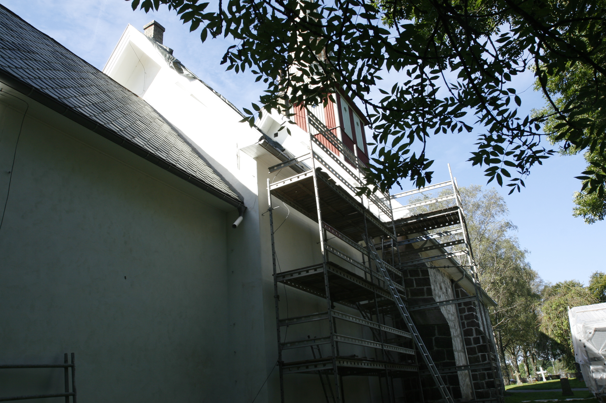
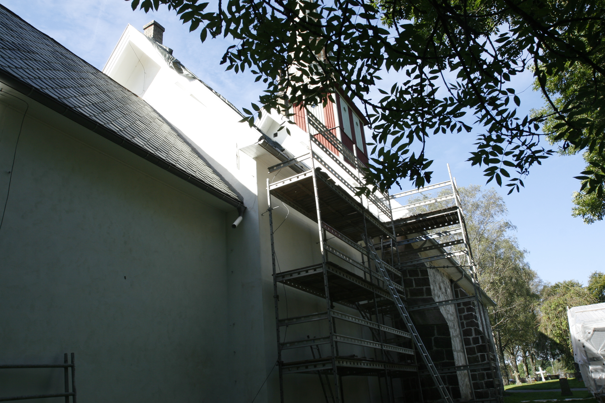

Øyestad kirke
Foto: Torvald Slettebø, Universitetet i Agder, Seniorsenteret (2007)
Tekst: Bjarne Karsten Nenseter
Øyestad Kirke - På Kirkevandring i Aust-Agder

Prestegjeld:Øyestad
Prosti: Arendal
Kommune: Arendal
Innviet: Middelalder/1902
Øyestad gamle kirke kan føre sine tradisjoner 7-800 år tilbake. Den var i flere hundre år hovedkirke for et område som nå utgjør 5 prestegjeld, nemlig foruten Øyestad også Fjære med Grimstad, Froland og Hisøy. Den kjente Holtpresten A. Faye sier i sin bok om Øyestad prestegjeld at det var «et av Christiansand Stifts anseeligste Præstegjelde som ofte kaldtes Christiansands lille bispestol.» Kirken skal også ha vært fylkeskirke.
Øysetad kirke ligger vakkert til på gården Øyestad's grunn, den gamle prestegård. Den er oppført av sten i rektangulær form. Presten Faye sier i sin ovenfor nevnte bok at «Øyestad og Fjære kirker er ældgamle Murkirker, de såkaldte Munkekirker byggede av Gråsten i en simpel langaktig form. De er langt ældre end Reformasjonen og hører uden tvil til de ældste kirker i Amtet.» Arkeologen professor Dietrichson antar at Øyestad kirke må være bygget mellom 1200 og 1338. Eyarstadir Kirkja var kirkens gamle navn.
Opprinnelig har kirken bestått av det rektangulære skip med en halvrunding mot øst - såkalt apsis - til alteret. Foran inngangen har det vært et lite våpenhus. Den vakre gotiske inngangportalen er prydet med utsiringer hugget i klebersten. Det samme gjelder portalen på søndre langvegg, her finner vi også et hode med bispehus over spissbuen.
Kirken har senere fått kor og sakristi i tømmer. Den halvrunde apsis ble da revet. Siden har den også fått våpenhus med tårn. Kirken fikk da stort sett samme eksteriør som Fjære kirke. Ser vi på interiøret, så minner det også om Fjære kirke med to gallerier over hverandre på nordre langvegg. Hver gård hadde sin kirkestol med dør foran. Disse ble senere fjernet og erstattet med vanlige kirkebenker. Nedenes kongsstol var særlig vakker med røde draperier. En antar at den var fra den beryktede lensherre Erik Munk's tid. Han bodde på Nedenes kongsgård. Videre hadde kirken bispestol, prestekor og skriftestol som alt var vakkert prydet. Altertavlen var tredelt med vakker ramme med utskårne søyler med trefigurer av Moses og Aron på sidene. Alterbilde forestilte nattverdens innstiftelse på nederste felt, de 5 kloke og 5 dårlige brudepikene på midterste felt og himmelfarten øverst. Kirken hadde alterkar fra 1542 og to vakre lysestaker fra 1730, som finnes i den restaurerte kirke. Nederste del av døpefonten er hugget i klebersten og stammer også fra den gamle kirke, og likeså et gammelt døpefat i messing.
Under rengjøring av den gamle kirke i året 1900 oppdaget en kalkmalerier på veggene. Fagfolk ble tilkalt fra Oslo, men da disse kom, lå kirken i ruiner, herjet av brann. Den gamle kirketjener holdt på med oppussingsarbeide på kirkegården og hadde satt fyr på vissent løv m.m. Plutselig tok det til å blåse, og før en visste ordet av det, sto kirken i lys lue. Alt som var oppført i tømmer strøk med. Det var 18.mai 1900 - en trist dag for Øyestad menighet. Den gamle fylkeskirke rommet uerstattelige verdier som nå gikk tapt.
Kort tid etter brannen kalte kirkevergen, bestyrer Carl Johansen, alle kirke -eierne inn til møte. En ble enige om å gjenreise kirken. En kirkekomite ble nedsatt med kirkesanger Midttun som formann. Kirken ble nå oppført etter et forslag fra arkitekt Beiner i Fortidsforeningen. En mente det skulle være mere i samsvar med den opprinnelige kirke. Stortingsmann Daniel Vigeland skjenket alterbilde. Rammen, alterbord og alterring er gave fra Rykene bruk, og prekestolen gave fra arbeiderne ved bruket.
Den 12.desember 1902 ble en stor dag for Øyestad menighet. Da ble kirken vigslet av prost Irgens. I 1907 overtok kommunen kirken.
Gjennom årene har Øyestad fått flere gaver, bl.a. nytt alterutstyr i sølv og blomstervaser. I 1925 skjenket Birgithe Thommesen nytt prektig kirkeorgel. I 1963 fikk kirken ny altertavle laget av Terje Grøstad. En storstilet gave fra Martha Vigeland gjorde det mulig. Den lyser opp i den vakre kirken. Øyestad kirke bærer preg av at den delvis er nybygd. Men fremdeles taler de gamle kirkemurer med de vakre portaler om den gamle kirke som gjennom århundrer har samlet folket om ord og sakrament, i sorg og i glede.
Teksten er hentet fra Bjarne Karsten Nenseters bok ”På Kirkevandring i Aust-Agder”, som han utga i 1993, på grunnlag av sine artikler i Agderposten i 1950-årene, da han var prest i Aust-Agder. Vi gjengir her teksten med tillatelse fra Nenseters arvinger.


 
